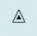
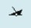
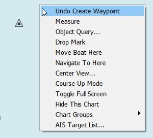
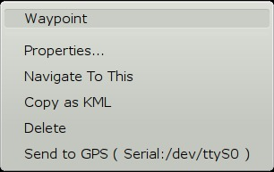
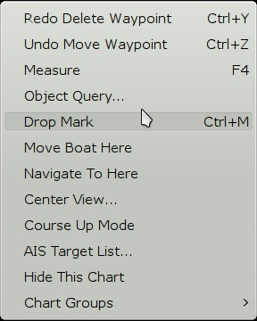

Marks and Routes
Located in Toolbar Buttons Pages
Marks Routes
……… …
…
Route Triangle Shipwreck MOB Create Route
First right-click on the chart and pick “Drop Mark”

Then right click nearby and select “Undo Create Waypoint”

Or right-click on the Mark and select “Delete”
Marks
Are the basic points that are used for many things, such as creating routes, marking fishing spots, good anchorages or anything of interest.
Once a mark is created a focused right-click dialog becomes available, when clicking on the mark.

Create a mark
There are a few ways to directly create marks.
- at boat's position “Ctrl + O”.
- at cursor position “Ctrl + M”.
- at cursor position “Right-click” & press “Drop Mark”.
Marks are created at the start of each leg in a route, and one at the end of the route. More about routes a bit further down this page.
Marks created these ways will have a triangular icon, except for routes that uses a diamond, but no name.
The default icon, when creating a mark, is possible by changing the the value “DefaultWPIcon” in the opencpn.ini (config) file. Use the name of any available icon in the properties dialog.
More Detail In the [Settings/Others] section set the option DefaultWPIcon to one of:
empty, airplane, anchorage, anchor, boarding, boundary, bouy1, bouy2, campfire, camping, coral, fishhaven, fishing, fish, floating, food, fuel, greenlite, kelp, light, light1, litevessel, mooring, oilbouy, platform, redgreenlite, redlite, rock1, rock2, sand, scuba, shoal, snag, square, triangle, diamond, circle, wreck1, wreck2, xmblue, xmblue_, xmgreen, xmgreen_, xmred, xmred_, activepoint
values representing the default set of built-in icons or to a filename of any of your UserIcons, without the the path and .xpm extension. If you have a file called MyICON.xpm in the user icons folder, the value will be simply MyICON
Move a Mark
You can move the mark by left-click-dragging it around. To prevent accidental movement of marks go to Options>Display>Advanced and click the box “Lock Waypoints”.
Delete a Mark
You can delete a mark by right-clicking its icon, and selecting “Delete”.
Undo-Redo a Mark
There is an built in undo/redo buffer for creating, deleting or moving marks or waypoints. If you have just created, deleted or moved a mark the right-click dialog will have relevant entries. The undo/redo, for moving or creating marks, follows a straight time-line and is not tied to an individual mark.

Right-click on a Mark
Above is a right-click menu just after moving a mark a few times and undoing the last move, and one mark was deleted, and then the deletion was undone. CTRL + Z and CTRL + Y works as hot-keys for undo/redo.
Mark Properties
All marks have properties that can be seen by right-clicking and pressing “Properties”, or even simpler just double click the mark.

Read all about the properties dialog in Extended MarksMarks can be manipulated through the Route & Mark Managers Waypoints tab as well. Deleting a mark that is part of a route, will also change the route. Marks that are a part of a “layer” cannot be changed at all. Marks can also be imported into OpenCPN in a number of ways. Hidden waypoints are not offered as “Use nearby WPT” while creating a route.
Read all about this in the Route & Mark Manager
A general locking of all marks is available. Goto Options → Display →Advanced
and tick the box. This feature is handy, to prevent accidentally moving a mark. Activate this feature when underway, deactivate it when planning.
The Man OverBoard mark can be activated through the icon  in the toolbar, or through hitting Ctrl + Space-bar. The mark looks like the button and is dropped on own boats present gps position. This mark cannot be moved or deleted with the cursor or keyboard (by mistake), but can still be deleted from the Route/Waypoint manager dialog. More about Man OverBoard here.
in the toolbar, or through hitting Ctrl + Space-bar. The mark looks like the button and is dropped on own boats present gps position. This mark cannot be moved or deleted with the cursor or keyboard (by mistake), but can still be deleted from the Route/Waypoint manager dialog. More about Man OverBoard here.
All the details of the Mark/WP Properties dialog are dealt with in Extended Marks
Use your own Icons
OpenCPN comes with a handful of different icons that can be assigned to a mark. Right click or use the Route Manager and activate the properties dialog. The Mark Icon window in the dialog shows the available icons.
A user can install his or her own icons to use with marks and “own ship”.
1. Create a directory called “UserIcons” in the same place that holds your opencpn.ini(config) file. Instructions to find the directory (folder) location here: OpenCPN Installation
2. Add .jpg image files to this directory. The legacy .xpm format works as well. The icons can be any size. The name of the file (without the extension) becomes the name of the new waypoint icon. These new icons will appear on the Waypoint Properties dialog, and can be assigned to any waypoint. They can also be assigned in GPX Import files.
3. The User Iconspage contains links to a few sets of user contributed icons.
4.To replace the default own ship icon  , just put a file “ownship.jpg” or “ownship.xpm”, containing the ownship picture you prefer, in the UserIcons directory, described above.
, just put a file “ownship.jpg” or “ownship.xpm”, containing the ownship picture you prefer, in the UserIcons directory, described above.
More about “ownship” icons and setting “ownship” size in Options Setting - Own Ship.
Read about Creating Routes in Create Route
Located in Toolbar Button Pages